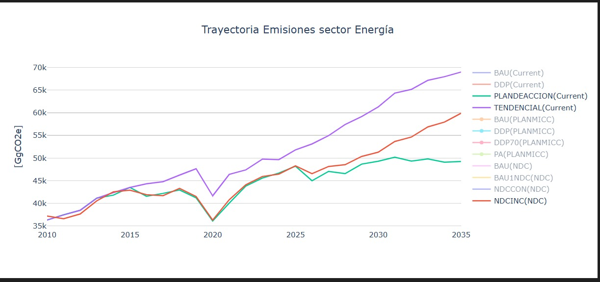
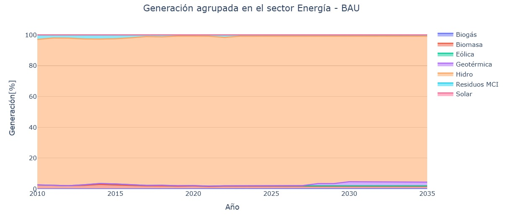
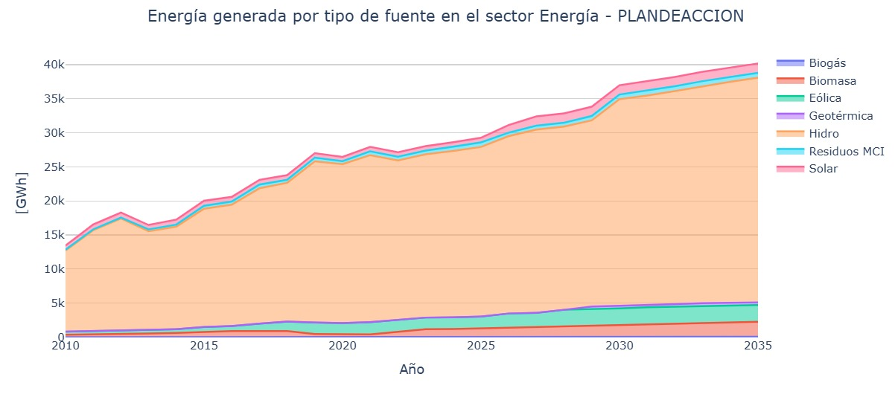
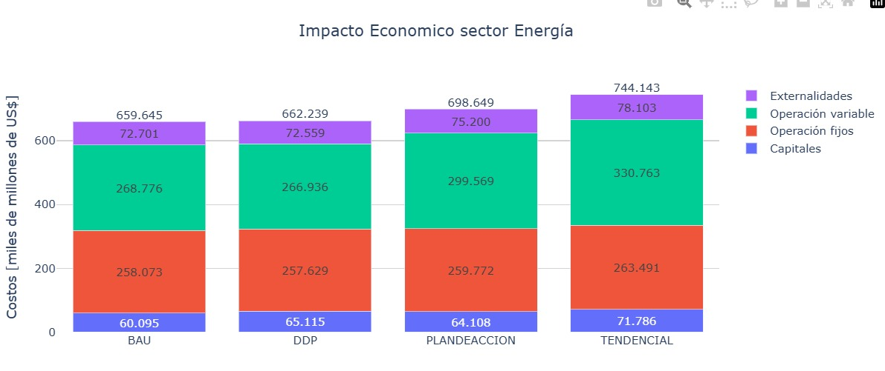
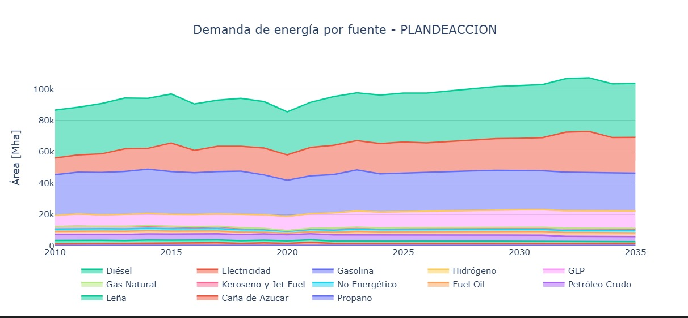

4.4. Resultados
Las trayectorias de emisiones de gases de efecto invernadero del sector Energía se presentan en la Figura 4.2 para los distintos escenarios analizados. Se observa una divergencia progresiva entre el escenario tendencial y los escenarios que incorporan acciones de mitigación, particularmente a partir de la segunda mitad del período de análisis. El escenario de Plan de Acción presenta una trayectoria de emisiones inferior al escenario tendencial, reflejando el efecto de la incorporación de medidas de mitigación en el sector energético a lo largo del horizonte 2010–2035.

Figura 4.2 Trayectoria de emisiones de gases de efecto invernadero del sector Energía bajo distintos escenarios (2010–2035)
La Figura 4.3 presenta el porcentaje de generación eléctrica agrupada por tipo de energías renovables en el Escenario Tendencial. En este escenario se mantiene una estructura de generación relativamente estable a lo largo del período de análisis, con una alta dependencia de la generación hidroeléctrica y una limitada incorporación de nuevas fuentes. La comparación con el Escenario Plan de Acción permite evidenciar las diferencias en la evolución de la matriz eléctrica cuando no se incorporan medidas adicionales de mitigación.

Figura 4.3 Participación porcentual de la generación eléctrica en energía renovables– Escenario Tendencial (BAU) (2010–2035)
En la Figura 4.4 se muestra la participación porcentual de las fuentes de generación eléctrica agrupadas por tipo de energía renovable bajo el Escenario Plan de Acción. La generación hidroeléctrica continúa representando la mayor proporción de la matriz eléctrica, mientras que las fuentes renovables no convencionales incrementan gradualmente su participación relativa. Este comportamiento evidencia una diversificación progresiva de la matriz de generación asociada a la implementación de acciones de mitigación.

Figura 4.4 Participación porcentual de la generación eléctrica en energía renovables – Escenario Plan de Acción (2010–2035).
En la Figura 4.5 se muestra la evolución de la energía generada (GWh) en energías renovables en el sector Energía bajo el Escenario Plan de Acción. La generación hidroeléctrica mantiene una participación predominante durante todo el período de análisis, mientras que las fuentes renovables no convencionales incrementan gradualmente su contribución. Este comportamiento refleja la incorporación progresiva de nuevas tecnologías de generación y la diversificación de la matriz energética en el marco de las acciones de mitigación consideradas.

Figura 4.5 Figura 6. Energía generada en energías renovables en el sector Energía – Escenario Plan de Acción (2010–2035).
El impacto económico asociado a los escenarios del sector Energía se presenta en la Figura 4.6, desagregado en costos de capital, costos de operación fija, costos de operación variable y externalidades. Se observan diferencias entre escenarios en la composición y magnitud de los costos totales, siendo el escenario tendencial el que presenta el mayor nivel de costos agregados. Los escenarios que incorporan acciones de mitigación muestran variaciones en la estructura de costos, asociadas a cambios en la matriz de generación y en la adopción tecnológica.

Figura 4.6 Impacto económico del sector Energía por escenario, desagregado por componentes de costo.
La Figura 4.7 presenta la evolución de la demanda de energía por tipo de fuente bajo el Escenario Plan de Acción. A lo largo del período de análisis se observa una demanda creciente, con variaciones en la participación relativa de los distintos energéticos. Estos cambios reflejan la transición progresiva en los patrones de consumo energético y la incorporación de fuentes alternativas en el marco de las medidas de eficiencia energética y movilidad sostenible consideradas.

Figura 4.7 Demanda de energía por tipo de fuente en el sector Energía – Escenario Plan de Acción (2010–2035).